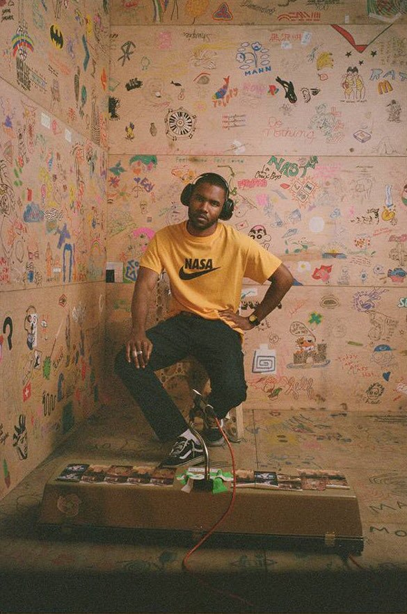
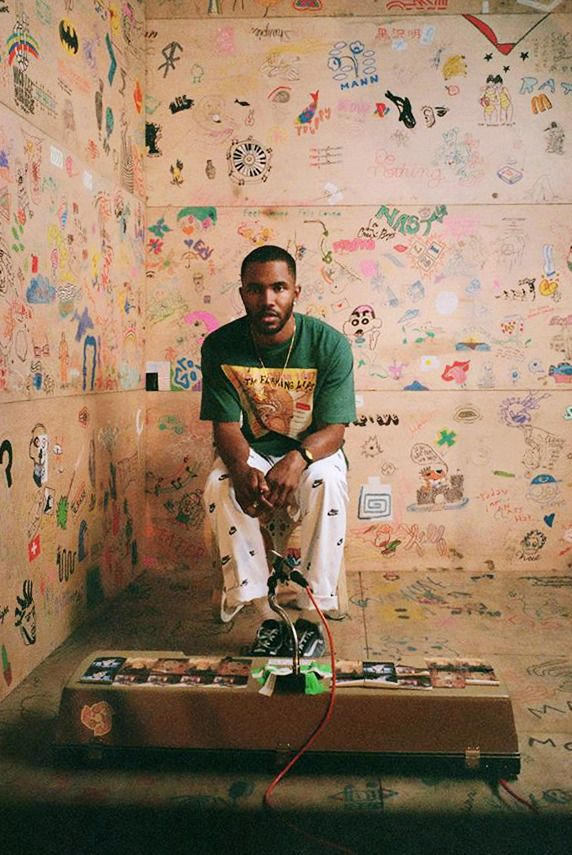

Ο Φρανκ Όσιαν (γεννημένος Κρίστοφερ Έντγουιν Κούκσει στις 28 Οκτωβρίου 1987) είναι Αμερικάνος τραγουδιστής, τραγουδοποιός, παραγωγός, ράπερ και φωτογράφος. Είναι γνωστός για τα αναγνωρισμένα του εναλλακτικά R&B άλμπουμ channel ORANGE και Blonde.
Ξεκίνησε την καριέρα του γράφοντας τραγούδια άλλων καλλιτεχνών, συχνά ανώνυμα, έως ότου έγινε μέρος του εναλλακτικού hip hop συγκροτήματος Odd Future το 2010. Ως μέλος του συγκροτήματος, ο Όσιαν όχι μόνο έγινε γνωστός άλλα γνώρισε άτομα με τα οποία θα συνεργαζόταν ακόμα και μετά από την ανεπίσημη διάλυση του συγκροτήματος, όπως ο ηγέτης της μπάντας, Tyler, the Creator. To 2011 ο Όσιαν κυκλοφόρησε το πρώτο του σόλο έργο, το mixtape nostalgia, ULTRA, το οποίο έλαβε θετικές κριτικές. Το 2012 κυκλοφόρησε το πρώτο άλμπουμ του Όσιαν, channel ORANGE, το οποίο έκανε το ντεμπούτο του στο νούμερο 2 του Αμερικάνικου Billboard 200 και σύντομα έγινε πλατινένιο. Το channel ORANGE έλαβε ευρεία αναγνώριση, λαμβάνοντας υποψηφιότητα για το βραβείο Γκράμι καλύτερου άλμπουμ και κερδίζοντας το βραβείο Γκράμι καλύτερου σύγχρονου urban άλμπουμ.
Παρά την επιτυχία του channel ORANGE, o Όσιαν απέφειγε συνεντεύξεις και δημόσιες εμφανίσεις. Το 2013, επιβεβαίωσε ότι ηχογραφούσε ένα ακόμα άλμπουμ. Το 2014 ανακοίνωσε ότι το άλμπουμ είχε σχεδόν ολοκληρωθεί, ενώ τον Απρίλιο του 2015, μέσω μιας μυστηριώδους ανάρτησης, ανακοίνωσε ότι το άλμπουμ θα κυκλοφορούσε τον Ιούλιο της ίδιας χρονιάς. Το άλμπουμ δεν κυκλοφόρησε τον Ιούλιο, χωρίς κάποια εξήγηση ή δήλωση του Όσιαν για το θέμα. Τον Ιούλιο του 2016 ο Όσιαν υπονόησε πως το άλμπουμ, με τίτλο Boys Don't Cry, θα κυκλοφορούσε τον ίδιο μήνα, κάτι που επίσης δεν συνέβη. Στις 1 Αυγούστου 2016, μια μυστήρια ζωντανή ροή εμφανίστηκε στην ιστοσελίδα του Όσιαν η οποία απεικόνιζε τον Όσιαν να χτίζει μιαν σκάλα. Η ζωντανή ροή συνέχισε για περίπου 140 ώρες εώς ότου στις 19 Ιουλίου μουσική υπόκρουση προστέθηκε στην ροή. Αυτή η μουσική ήταν το "οπτικό άλμπουμ" Endless, διαρκείας 45 λεπτών, το οποίο επιβεβαιώθηκε ως διαφορετικό πρότζεκτ από τo Boys Don't Cry. Το Endless έλαβε μια κανονική κυκλοφορία ως άλμπουμ το 2018, δύο χρόνια μετά την πρεμιέρα του, λαμβάνοντας θετικές κριτικές. Στις 20 Αυγούστου 2016, μια μέρα μετά την πρεμιέρα του Endless και 4 χρόνια μετά την κυκλοφορία του channel ORANGE, το εξαιρετικά αναμενόμενο δεύτερο άλμπουμ του Όσιαν, Boys Don't Cry,τελικά κυκλοφόρησε, άλλα με τον τίτλο Blonde. Το άλμπουμ έκανε το ντεμπούτο του στο νούμερο ένα του Billboard 200 στην Αμερική και σε άλλες χώρες, και έγινε πλατινένιο. Το Blonde έλαβε διθυραμβική ανταπόκριση απο τους οπαδόυς του Όσιαν καθώς και απο τους κριτικούς, και ονομάστηκε ένα απο τα 10 καλύτερα άλμπουμ του 21ου αιώνα απο το The Guardian.[2]
Μετά την κυκλοφορία του Blonde, ο Όσιαν έχει κυκλοφορήσει διάφερα επιτυχημένα singles, όπως τα Chanel, Moon River ή Biking. Το 2017 δημιούργησε την ραδιοφωνική σειρά Blonded Radio, με ένα νέο του single να κάνει πρεμιέρα σε κάθε επεισόδιο, όμως η σειρά δεν κράτησε για περισσότερο απο 11 επεισόδια. Tον ίδιο χρόνο δήλωσε ότι είχε ηχογραφήσει ένα ακόμα άλμπουμ, αλλά κανένα τέτοιο πρότζεκτ δεν έχει ακόμα κυκλοφορήσει.
